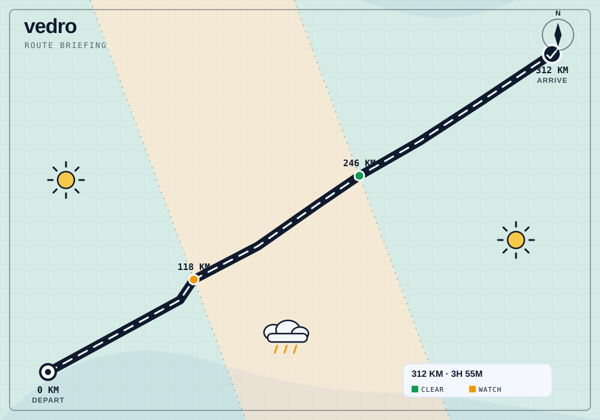
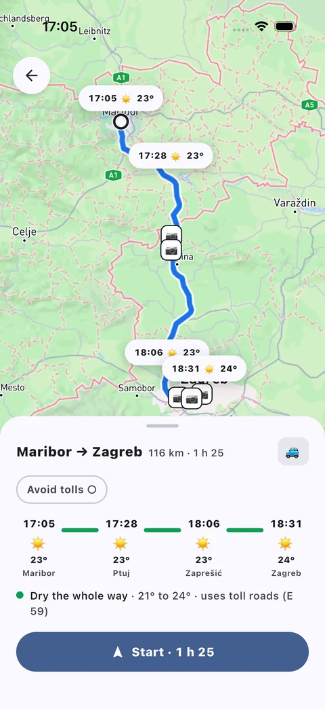
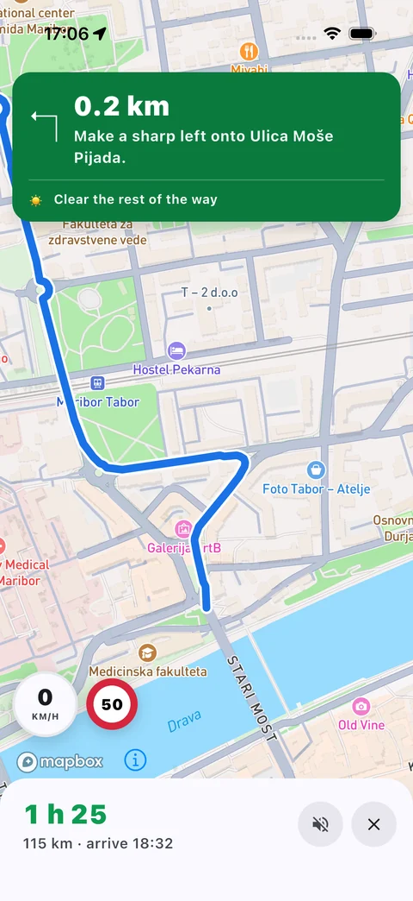

The forecast,
along your route.
Weather changes along the road. Vedro matches the forecast to the time you’ll reach each stretch, not just the place you’re heading.
Plan for a motorcycle, a convertible, or a car. Compare departure times before you set off.

How the map reads
Rain, crosswind, and temperature are rated for your vehicle. Missing weather stays unknown, never green. Forecasts are guidance, not a guarantee of safe road conditions.
- Clear
- Watch
- Rough
- Unknown
- Clear
- Conditions sit inside the comfortable range for the vehicle profile you picked.
- Watch
- Rain, crosswind, or temperature approaching the point where it's worth paying attention.
- Rough
- Past that line: heavy rain, strong crosswind, ice, or extreme cold or heat for an open-air ride.
- Unknown
- The forecast for that stretch isn't in yet. It stays gray, never green, until it is.
In the app
Two screens from the build running on a phone: the route preview you check before leaving, and the guidance you get while driving it.

The route, scored before you leave

The next turn, and the weather after it
Screenshots from the app on 15 September 2026 · live forecast, so the numbers were true that afternoon
Same road, different hour
A later start changes the weather you meet along the way. Choose a departure to explore this sample trip.
Illustrative sample data, not a live forecast
WatchShowers near the Tauern Pass, 40 minutes in
Arrive by 18:15
On the road
- Route scoring
- Plan a trip between two places and vedro splits the whole road into stretches, each scored for the weather due when you'd be passing through, not for right now.
- Vehicle profile
- Pick motorcycle, convertible, or hardtop car before you plan. Rain, crosswind, and temperature thresholds shift to match what actually affects that ride.
- Departure comparison
- Compare leaving now against a few hours from now or the next morning, so a rough window along one stretch doesn't have to mean cancelling the whole trip.
- Guidance ahead
- Once you're moving, turn-by-turn guidance shows the next turn and the next stretch of rough weather on the same map, so it doesn't arrive as a surprise.
- Spoken callouts
- Turn on voice and vedro speaks upcoming turns plus a heads-up if conditions ahead turn worse mid-ride. It ducks music instead of cutting over it, and stays off until you switch it on.
- Camera heads-up
- A short spoken and haptic alert fires 500 meters ahead of a known speed camera regardless of the voice setting, since that one's about the road, not the forecast.
Support
vedro is in development for iOS and Android. For questions, ride reports, or bugs, email directly and I'll get back to you.
danijel@danyzmaj.com